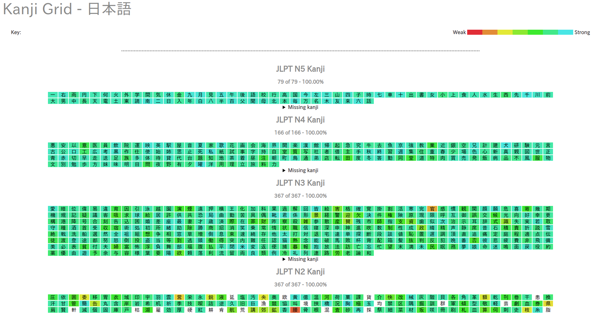

Bonjour, je suis VIDAL Antoine. Après avoir obtenu mon baccalauréat au Lycée Hoche je me suis orienté vers le cycle ingénieur à l'ISTY. Je souhaite devenir développeur Back-End (ou Full-Stack si possible).
L'informatique et le développement d'applications est un domaine qui me passionne. Au vu de son omniprésence aujourd'hui il est difficile de faire sans. C'est pourquoi je souhaite orienter ma carrière dans ce domaine.
Lors du cursus suivi à l'ISTY, j'ai pu me familiariser avec les principaux langages de programmation : le C, le Python,... Toutefois je souhaite constamment parfaire mes connaissances et donc découvrir de nouveaux langages ne me rebute pas.
Si vous souhaitez avoir plus d'informations vous pouvez regarder mon CV ainsi que mon Github.
Mis à part l'informatique, je suis aussi intéressé par la culture japonaise. Je trouve la façon de penser et la mentalité des japonais très enrichissante pour un occidental. Je ne suis pas expert dans cette langue mais je souhaite passer le JLPT N3 (équivalent du niveau B1 selon le CECR, le JLPT étant un équivalent du TOEIC).
Vous pouvez trouver divers documents concernant mon niveau en japonais provenant du logiciel Anki. Le premier fichier représente tout le vocabulaire appris sur ce logiciel et provient de ce deck. Les autres fichiers représentent des pages web représentant les kanjis que je maîtrise : nous y trouvons le classement selon l'enseignement scolaire japonais (教育漢字) et selon le JLPT.
